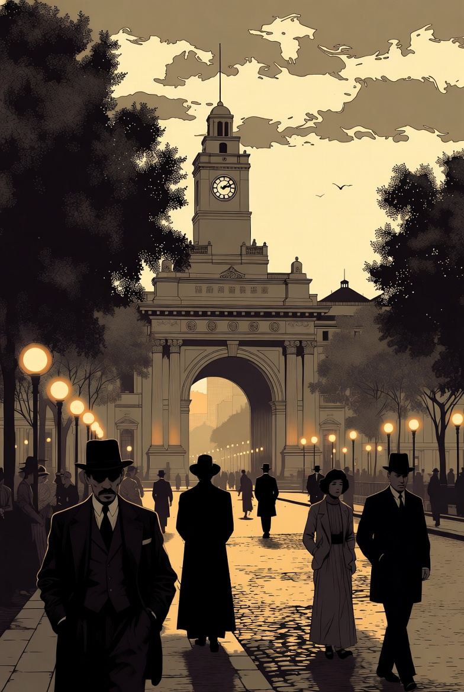
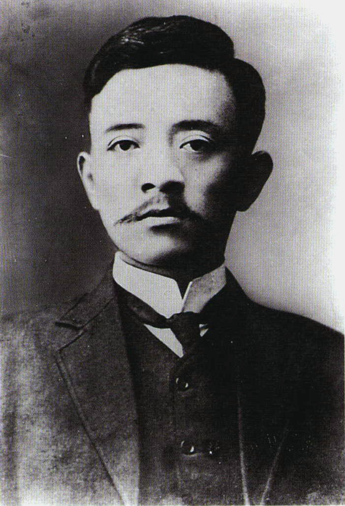

宋案为什么发生在 1913 年春天，而不是别的时候


要理解宋案，必须先回到 1912—1913 年的整体政治气氛。民国已经建立，《临时约法》已经出台，国民党也已经完成组建，整个政局正从“革命建国”的第一阶段，进入“谁来按什么规则治理国家”的第二阶段。这个阶段最大的看点，不再是清朝是否退场，而是议会、总统、内阁、政党之间到底如何分配实权。
宋教仁恰恰站在这个问题的中心。他不仅主张责任内阁制，还积极推动国民党参加国会选举，希望以多数党组阁的方式，把议会竞争真正转化为执政秩序。于是，1913 年的选举结果就不只是数字，而是一种现实威胁：国民党成为第一大党，意味着总统与军政权力可能第一次真正面对来自议会多数的制度性约束。宋案之所以会在这个时间点爆发，正是因为政治冲突已经从理念之争进入了权力接管的前夜。
从组党、选举到北上组阁，这条线是怎样形成的
《临时约法》出台
约法在制度上强化了责任内阁与议会监督的思路，为后来“多数党组阁”的设想提供了法理背景。
府院冲突与组党推进并行
唐绍仪内阁与袁世凯的摩擦说明总统—内阁关系并不稳定；与此同时，宋教仁积极推动组党，为后续选举布局。
国民党正式成立
同盟会及多股力量合流，形成能参与公开国会竞争的新政党。宋教仁成为其中最重要的组织与路线推动者之一。
全国奔走与竞选宣传
宋教仁四处演说，宣传政党政治、责任内阁与多数党组阁，把选举解释成制度接班的关键程序。
国民党成为第一大党
选举结果让国民党取得明显优势，宋教仁因此被普遍看作未来组阁核心。制度实验第一次看起来不只是理论，而是迫近现实。
北上前的组阁准备
宋教仁与党内重要人物在上海商讨党略与组阁策略，计划把国会多数转化为责任内阁的现实操作。
上海车站枪击与去世
宋教仁在赴京途中遇刺，两日后去世。随着案件线索出现，原本围绕组阁和制度的政治问题，迅速被推进到暴力与主谋的层面。
事件经过需要知道到什么程度
就这个专题而言，案情不需要铺陈成侦探小说，但几个基本事实必须清楚：1913 年 3 月 20 日晚，宋教仁在上海车站遇刺；两日后伤重去世。随后侦查过程中，武士英、应夔丞（应桂馨）、洪述祖、赵秉钧等人的名字陆续进入案件线索链中。证据和舆论很快把公众注意力推向“袁系是否涉案”的问题，但案件最终并没有形成一个被各方共同接受、足以彻底终结争议的司法结论。
这一点非常重要：对于事件篇来说，案件的不彻底解决本身就是历史事实的一部分。因为它意味着这不是一场单纯由司法系统善后、最后回到制度秩序中的刺杀案，而是一场迅速把整个政治体系拖入信任危机的事件。也正因此，宋案不能只被理解为“案情复杂”，而要被理解为“制度无法稳定吸收冲击”。
宋案为什么在当时引起巨大政治震动
它之所以震动全国，不只是因为宋教仁名气大，而是因为他所处的位置太关键。一个刚在国会选举中占优、正准备把多数党优势转化为组阁现实的人，在赴京途中被暗杀，这会立刻让所有人意识到：选举可能无法保护胜者，国会可能无法保护自己的领导力量，法律也未必能平稳接住政治危机。对一个新共和国来说，这样的信号极其危险。
更关键的是，案件并不是发生在政治低潮期，而是发生在制度实验最接近落地的时候。正因为国民党刚赢得优势、责任内阁刚有机会被实践，所以这起枪击的含义远超个人恩怨。它等于告诉全社会：即便你赢得了选举，真正的权力斗争仍可能在制度之外决出胜负。这种冲击，才是宋案迅速升级为全国性政治事件的根本原因。
它打断的不是一趟旅程，而是一条政治路径
如果只把宋案理解为“宋教仁没能活着到北京”，那就把它写得太小了。它打断的真正是：国民党凭借国会多数，尝试把责任内阁制转入现实运作的可能性。这条路径一旦走通，至少在形式上，中国有可能出现一种相对正规的权力更替逻辑——多数党进入行政核心，政府对议会负责，总统权被相对约束，政治斗争更多在制度内展开。
可宋案之后，这条路径迅速失速。调查的政治化、互信的崩塌、国会与政府关系的进一步恶化、南北对立的升级，都说明制度竞争被中途打断了。于是，这起刺杀的重要性不再只是“谁受害”，而是“哪条政治道路因此被缩窄”。从这个角度看，宋案最深的意义不在于案件细节，而在于它让制度实验突然退回到了力量实验。
为什么这个页面不打算把案情写成侦探故事
因为如果一味追着“谁是主谋”“哪封电报最关键”“哪条口供更真实”去写，读者最后很容易只记住一个悬案，却忘了这个悬案为什么会在民初政治中拥有如此大的结构意义。侦探式写法当然能提高悬念，但它的代价是把制度问题压扁成个人问题，把国家转型压扁成阴谋博弈。
因此，这一页的取舍原则很明确：案情细节只保留那些能够支撑政治解释的部分；真正要放大的，是事件如何改变政治格局，如何暴露制度脆弱性，如何把议会政治的试验推向断裂边缘。换句话说，这一页不是要让读者“破案”，而是让读者理解：为什么一场枪击能成为新共和国政治命运的转折性事件。